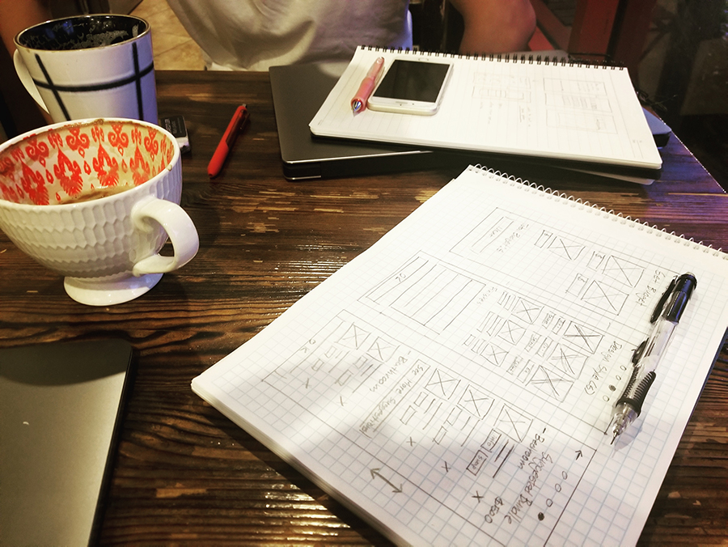
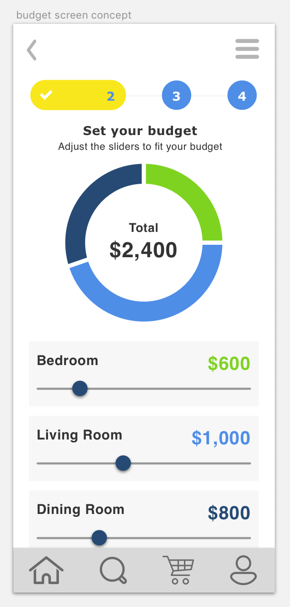
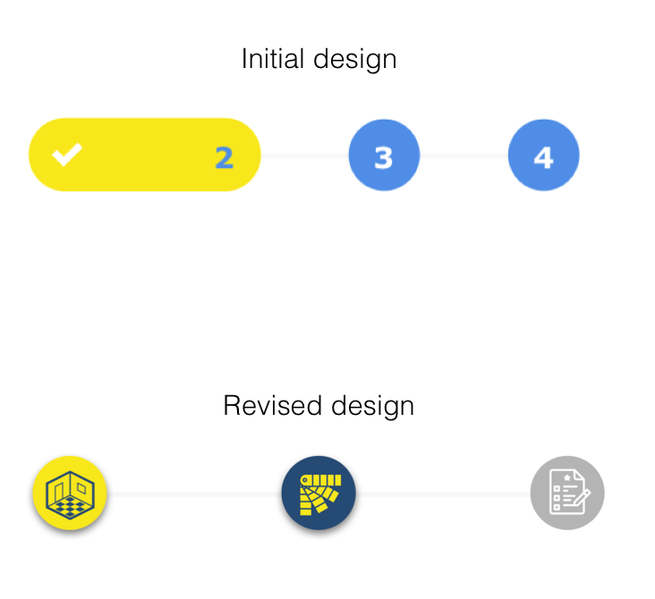
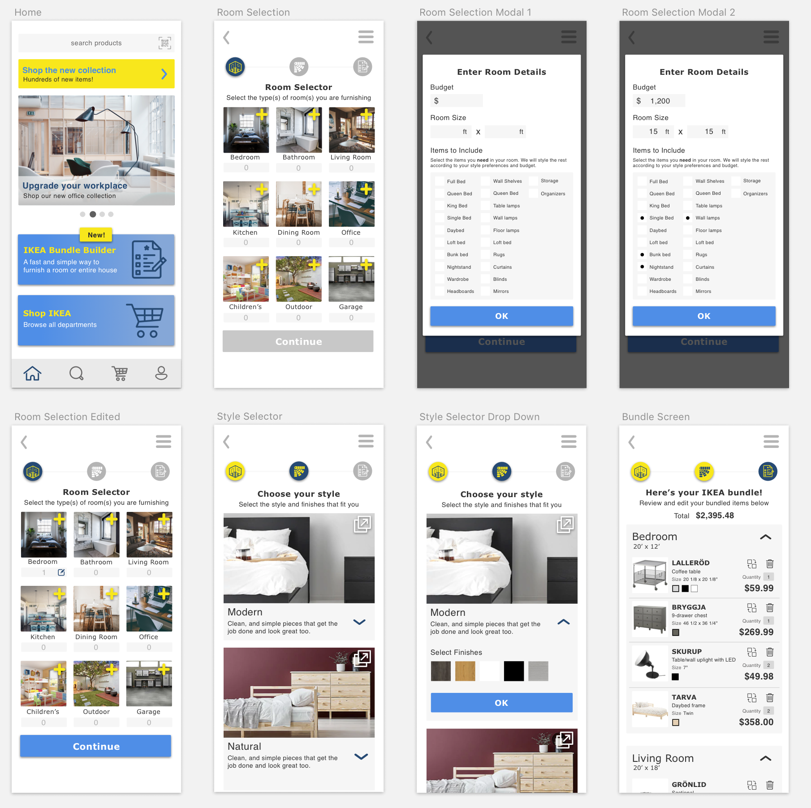

Ikea Bundle Builder
UX/UI Case Study
My Role: Product planning, research, UX design, UI design
Tools Used: Sketch App, Adobe Illustrator, Flinto, Invision, Pen & paper

Project Summary
For this project, I collaborated with a friend. Wanting to excercise our UX/UI design skills, we set out to find a problem that we could design an app around. After some thinking we thought of our friend Matt who had just recently moved into a new apartment. Matt doesn’t really have an eye for design but wanted his place to look cool. Because of this he asked my partner and I to accompany him to Ikea to help him pick out some furniture.
The product we designed aims to help people like Matt. We set out to design a simple, streamlined, and straightforward process by which people could make furniture purchasing decisions that were stylish and cohesive- all within the context of the Ikea brand.
The Problem
Sometimes people aren’t able to make thoughtful furniture purchasing decisions- whether it be because they don’t have the time, the eye for it, or a care to do so. As a result, their living space feels incohesive and thrown together.
The Solution
Our solution is to design an app that aids users in putting together personalized, stylish, and cohesive furniture packages. The app will collect information from the user such as room specifications, style preferences, as well as budget in order to generate packages that accomodate the user fully.
Research and Planning
We studied Ikea’s website to get a solid idea for how they categorized their products. We needed a solid understanding of Ikea’s product structure since we were designing the app within the context of their brand. Of course, we also took note of their branding and design style. We needed it to be consistent with the Ikea brand in order for it to truly feel like an Ikea shopping experience.

The concept for our app is pretty simple. We recognized that the main factor in the success of our design would be in how we laid out the data collection process for the user. With this in mind we began by listing all the information we would need to collect from the user in order to construct their personalized furniture package.
Collaborative Ideation

Once my partner and I agreed on the type of information that needed to be collected, we decided it was time to begin some layout sketching. Since we were collaborating on this project, we thought it would be a good idea to see what type of layouts/screen flows we could come up with individually and then to compare our results.

We met a week later and compared our individual designs. We worked together to construct a user flow that combined the best aspects of our respective inital designs.
Lo-Fi Wireframes & Usability Testing

The low-fidelity wireframing was my partner’s role. He constructed these wireframes in Adobe Illustrator while finetuning our paper sketches. After meeting once again and discussing the wireframes, it was time to test the flow on some potential users. We went home and tested the flow with friends and family in order to gain some outsider insights on our design.

We met once again and discussed how testing went. We each had multiple insights that allowed us to improve the design. Pictured above are some of the ideas and improvement suggestions that came as a result of our testing.
High Fidelity Screen Design
I set out to translate our wireframes into high fidelity screens. I came across a couple points of our design that I felt did not translate very well into high fidelity screens. Additionally, I received more feedback on the design via testing in order to make more improvements during this step of the design process.
Adjusting the Budgeting Step

Our initial design included a step in the flow entirely dedicated to budgeting. When I was designing the high fidelity screen, I realized that it gave off too much of a finance app feel. This is not consistent with how we wanted the app to feel. Additionally, the pie-chart forced the design to incorporate colors that clashed with the Ikea branding. I needed to come up with a new solution.
My solution was to consolidate the budgeting and room specification setting screens together. This was accomplished by giving the user the option to set the budget for each room along with the rest of their specifications within a modal window that would pop up when the user selects a room type. This de-emphasizes the budgeting aspect of the process while also simplifying the flow overall. We wanted the user to think more about their furniture package and less about how much money they were spending.
Refining the Breadcrumbs

I tested the screens with a friend and a suggestion he had made a lot of sense to me. He wanted to know that he could go back in the flow in order to edit previous steps. The initial breadcrumb design we had did not make it clear that the user could do so. The new breadcrumbs were designed to look like clickable buttons and also specified what part of the flow each step represented through the use of illustrative icons.
All the Screens

These are the high fidelity screens I designed in Sketch. You can click through the prototype for yourself here.
What I Learned
This project gave me great experience with collaboration. My partner and I planned out every step of the project in order to ensure a high quality end product. I gained valuable experience in the areas of design iteration, usabillity testing, screen design, brand consistency, as well as teamwork. I’m really proud of this project and had a lot of fun collaborating with my partner.
Back to Top